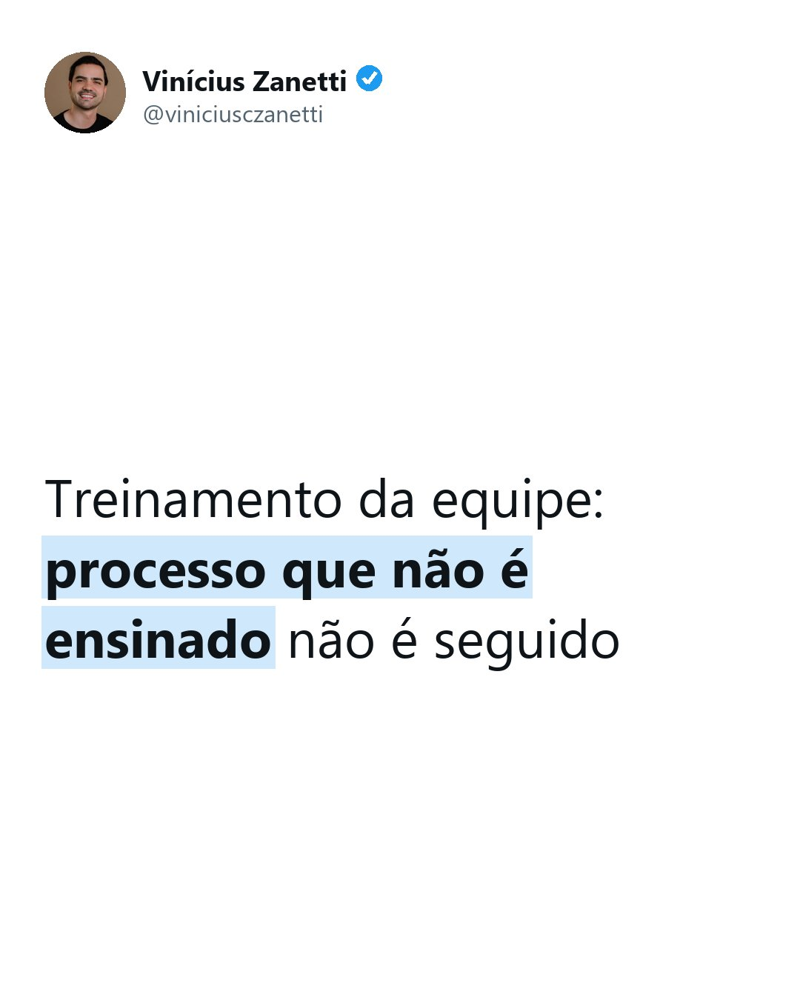

Treinamento da equipe de restaurante: processo que não é ensinado não é seguido
Reunião com documento na mão não é treinamento. No capítulo Garante do livro Restaurante no Controle, Vinícius Zanetti descreve o método em três passos e o detalhe que faz o cozinheiro seguir a ficha técnica.
Publicado em 16/11/2026
A ficha técnica está pronta, plastificada e pendurada na parede da cozinha. O checklist de fechamento foi impresso. O dono explicou tudo numa reunião rápida antes do turno. Duas semanas depois, o hambúrguer sai com a porção que cada um acha certa e o checklist está em branco.
Para o consultor Vinícius Zanetti, o processo não falhou. O que falhou foi o ensino. No livro Restaurante no Controle, ele abre a parte sobre equipe com uma frase que resume o problema: processo que não é ensinado não é seguido.

"Treinamento eficaz no contexto gastronômico não é uma reunião onde se apresenta um documento. É um processo prático, repetido e verificado."Vinícius Zanetti, no capítulo Garante do livro Restaurante no Controle
Por que a equipe não segue o processo?
O livro aponta as razões do setor. A operação é intensa e sobra pouco tempo para treinar. A rotatividade é alta, então o processo precisa ser ensinado de novo a cada pessoa que chega. E, quando a pressão do serviço aumenta, a equipe volta naturalmente aos velhos hábitos.
Há ainda um problema anterior ao treinamento: cargos sem definição clara. O livro cita o estudo de Sousa e Richa, que mostra como a falta de clareza sobre o conteúdo de cada cargo dificulta o acompanhamento, a gestão das pessoas e o próprio treinamento. Se ninguém sabe exatamente o que o chapeiro faz, não dá para ensinar o chapeiro.
Como treinar uma equipe de restaurante?
"Como treinar uma equipe de restaurante" é uma das buscas que o Google sugere sobre o tema. A resposta do método M.E.G.A. tem três passos, nessa ordem, sem pular nenhum:
"O colaborador precisa ver o processo sendo executado, executar ele mesmo com supervisão, e só então assumir a responsabilidade autônoma pela tarefa."Vinícius Zanetti, no capítulo Garante do livro Restaurante no Controle
- Ver. Quem já domina a tarefa faz na frente de quem está aprendendo, no posto de trabalho, com o equipamento real. Montar o lanche, fechar o caixa, conferir o freezer. Não é slide nem papel.
- Fazer com supervisão. Quem aprende executa, e quem ensina fica ao lado, corrigindo na hora. Esse passo se repete quantas vezes for preciso. É aqui que o erro aparece e é corrigido antes de custar dinheiro.
- Assumir. Só depois a pessoa responde sozinha pela tarefa. E continua sendo conferida, porque implementar não basta.
O erro mais comum é pular do primeiro para o terceiro passo. O funcionário vê uma vez, ouve "entendeu?", responde que sim e é deixado sozinho na sexta à noite. Não é falta de vontade dele. É falta do passo do meio.
Como treinar funcionário novo no restaurante?
Com os mesmos três passos, começando pelas tarefas que mais pesam no custo e no cliente. Neste exemplo, numa hamburgueria, o novo chapeiro aprende primeiro o porcionamento da carne e a montagem dos lanches mais vendidos, depois o checklist de fechamento da chapa. Tarefas de menor risco vêm depois.
Quem ensina também importa. O ideal é um responsável definido por função, e não "quem estiver livre". Cada pessoa que ensina do seu jeito cria uma versão diferente do processo.
Por que explicar o porquê do processo?
Este é o ponto que o livro chama de crítico. O treinamento precisa ensinar o que fazer e também por que fazer. A ficha técnica é o exemplo:
"Quando o cozinheiro entende que a ficha técnica protege a margem do restaurante, e que margem saudável significa negócio estável e emprego garantido, ele passa a tratar aquele documento de forma diferente."Vinícius Zanetti, no capítulo Garante do livro Restaurante no Controle
Sem o porquê, a ficha técnica parece capricho do dono. Com o porquê, ela vira proteção do emprego de quem está na cozinha. Neste exemplo, explicar que cada grama a mais de carne em cada lanche, multiplicada pelos lanches do mês, sai do resultado, muda a forma como a balança é usada. O tema do porcionamento está detalhado em Porcionamento: como padronizar e parar de perder lucro.
Como treinar a equipe de cozinha?
Na cozinha, o treinamento se apoia no que a etapa Estrutura do método documenta: procedimento de preparo de cada prato, padrão de apresentação, critério de qualidade e protocolo de limpeza e organização. Sem esse material escrito, o treinamento depende da memória de quem ensina, e o padrão muda a cada turma.
O livro descreve a fragilidade que isso evita: o cozinheiro que sabe a receita de cor e nunca a ensinou para ninguém. No dia em que ele sai, a receita sai junto.
O que fazer quando o funcionário não segue o treinamento?
O livro é direto:
"Quando uma inconsistência é identificada, a resposta não é punição, é diagnóstico."Vinícius Zanetti, no capítulo Garante do livro Restaurante no Controle
Se o problema é de compreensão, a resposta é mais treinamento. Se a ferramenta não ajuda, por exemplo uma balança longe da praça ou um checklist longo demais para o tempo do fechamento, quem muda é o processo. Punir sem entender a causa só ensina a equipe a esconder o erro.
A reunião semanal de erros, descrita em O erro mais caro da semana, é um bom lugar para descobrir se a falha é de treinamento ou de processo.
Como saber se o treinamento funcionou?
Conferindo. O livro trata o acompanhamento da execução como o último pilar da etapa Garante: processo implementado precisa ser verificado com regularidade. Na prática, o checklist preenchido, a porção pesada numa conferência surpresa, o caixa que bate. E, no mês, o CMV real perto do teórico.
Por onde começar: escolha uma tarefa que pesa no custo, como o porcionamento do item mais vendido. Defina quem ensina, faça os três passos com cada pessoa da praça e confira por duas semanas. Depois passe para a próxima tarefa.
Perguntas frequentes
Como treinar uma equipe de restaurante?
Em três passos: a pessoa vê o processo sendo feito, executa com supervisão até acertar e só então assume a tarefa sozinha, continuando a ser conferida. O treinamento explica também por que o processo existe.
Por que a equipe não segue a ficha técnica?
Na maioria das vezes, porque recebeu a ficha sem treino prático e sem entender o porquê. Quando o cozinheiro entende que a ficha protege a margem e o emprego, passa a tratá-la de outra forma.
O que fazer quando o funcionário não segue o processo?
Investigar a causa antes de punir. Se é falta de compreensão, mais treinamento. Se a ferramenta ou o processo atrapalha, o processo é ajustado.
Quanto tempo leva para treinar um funcionário de restaurante?
Não há prazo fixo. O passo de executar com supervisão se repete até a tarefa sair certa. Depois disso, a execução continua sendo conferida com regularidade.
Fontes
- Vinícius Zanetti, Restaurante no Controle: Método M.E.G.A. de gestão para restaurantes (Belo Horizonte, 2026), capítulo 4, Garante. Método de treinamento, explicação do porquê, resposta à inconsistência e citações. Padronização da cozinha no capítulo 3, Estrutura; o cozinheiro que nunca ensinou a receita, na Introdução.
- Falta de clareza dos cargos e treinamento: Sousa e Richa, Consultoria empresarial para melhoria de processos, artigo acadêmico citado no livro. O exemplo do chapeiro e da balança é hipotético.